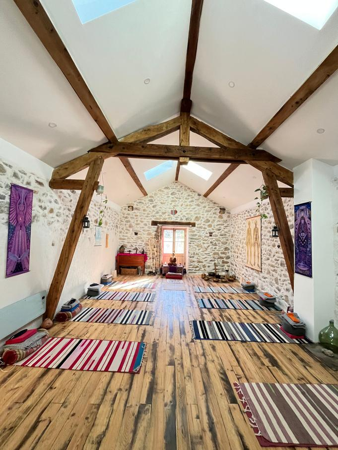
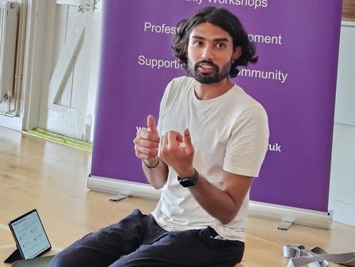
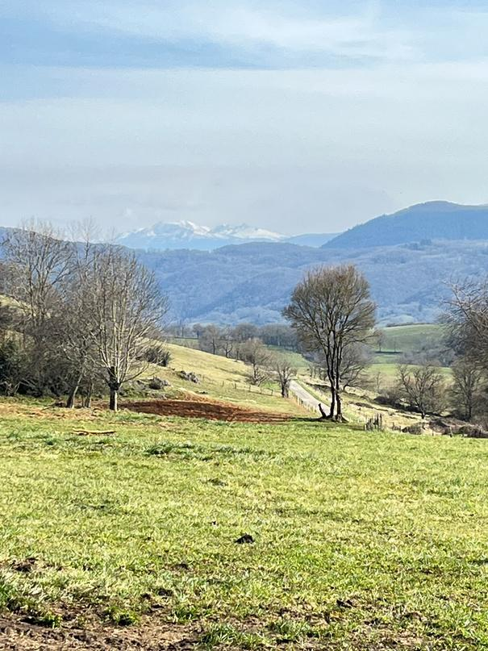
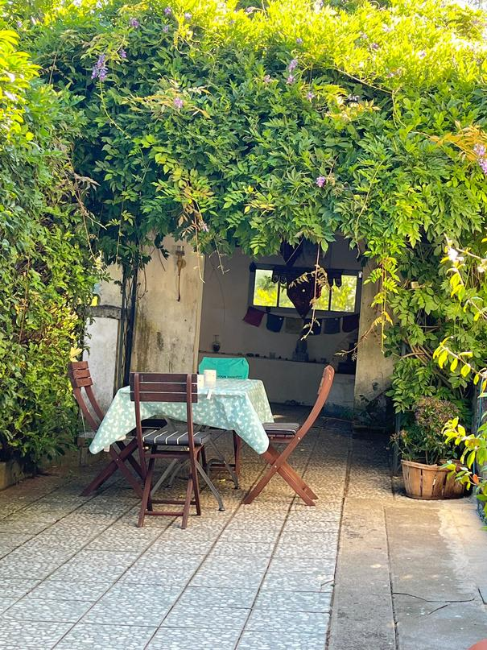
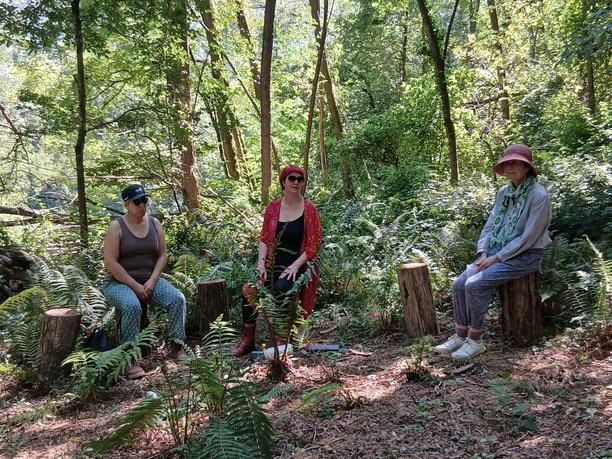
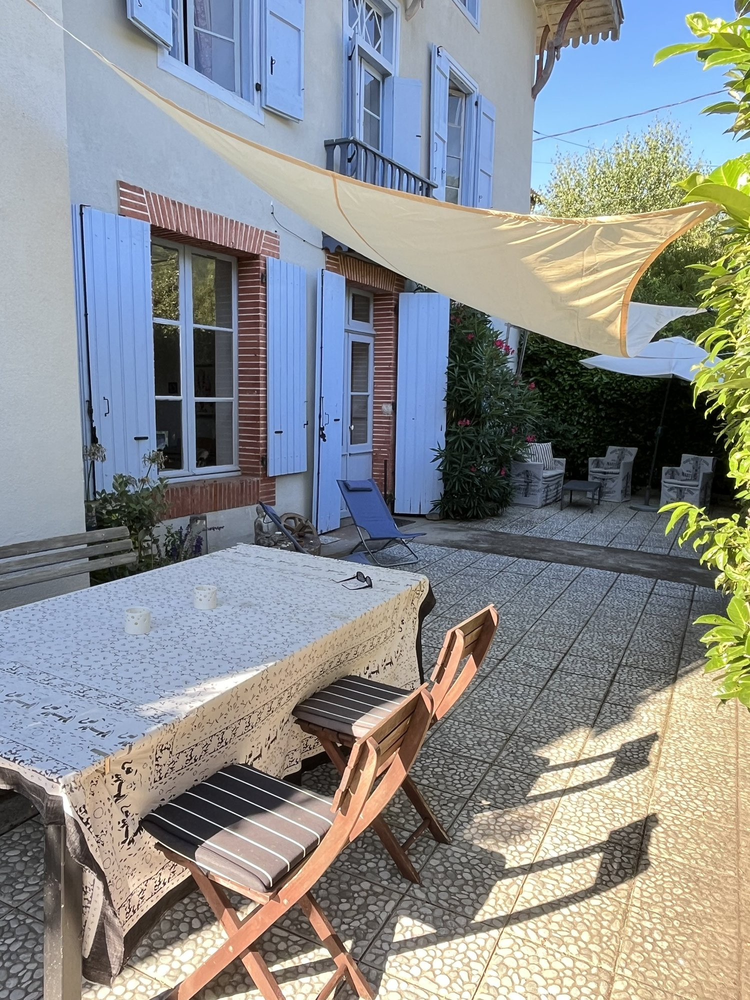
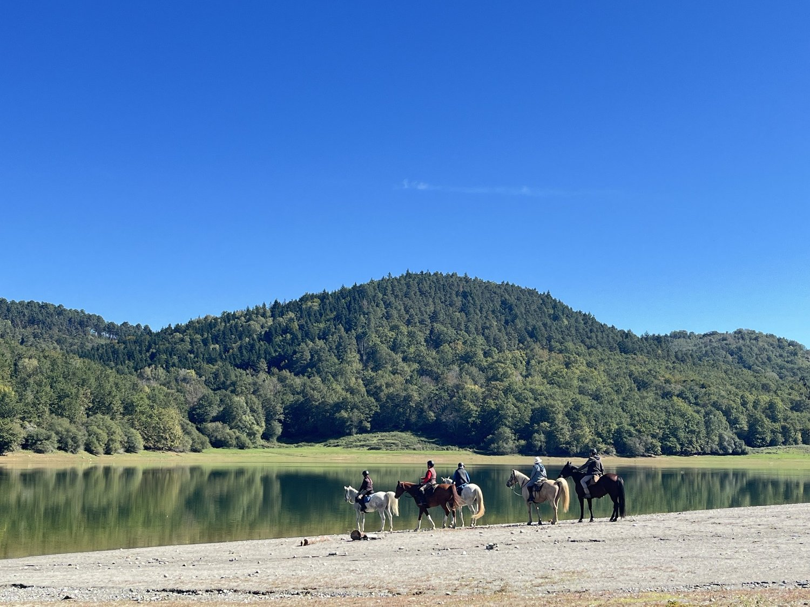
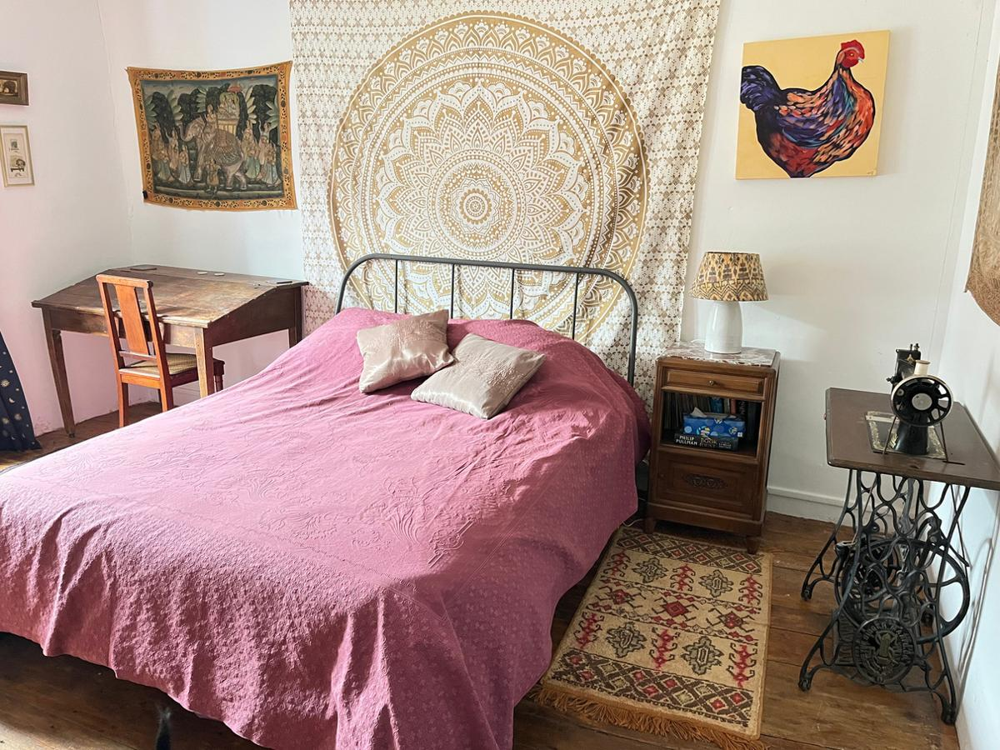
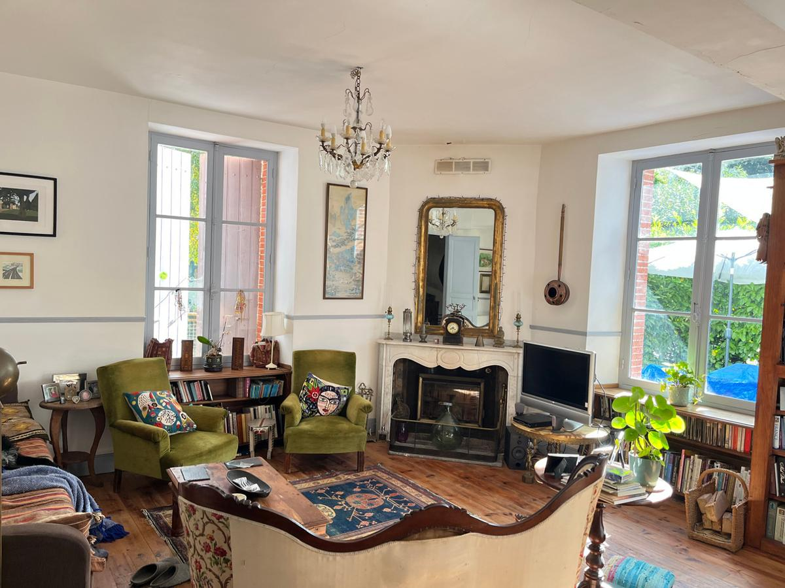

Shared room
At home at Viveka
£700 early bird per person · £750 standard
A place in a room shared with one other guest.
Choose shared room
Nurturing Shala Your stay & booking2–5 April 2027 · French Pyrenees
Yoga for Healthy Backs
A little space to move with care, breathe more freely and reconnect with yourself.
With Ankit Kumar & Claire-Louise Symonds
A feel for the retreat


Friday to Monday · Three nights
Nescus, near Foix, France
Time for practice and time for yourself
An invitation to slow down
Our backs carry us through everyday life. This retreat is an invitation to pause and explore how we move, with curiosity, patience and care.
Through supported yoga, breath awareness and guided relaxation, we’ll explore the relationship between the feet, pelvis and spine. Props and adaptations offer space to find what works for you.
Between practices, there is time to rest, share a meal or wander outdoors. You don’t need to fill every moment.
During our time together
Supported backbends offer a glimpse of the approach we’ll explore: thoughtful alignment, helpful props and time to notice how you feel. Each practice is adapted to the person.
Explore alignment and supported movement at your own pace, with guidance from Ankit and Claire-Louise.
Breath awareness, mindfulness and Yoga Nidra offer a quieter way to notice your experience.
Enjoy shared vegetarian meals, walks in nature and unhurried time to yourself.

Reflections from Southampton Yoga Association
“The expert use of props made each posture more accessible, offering both support and depth”
“Ankit won us over with his blend of ancient wisdom, authenticity, warm humility and gentle humour.”
Our home for the weekend
In the foothills of the French Pyrenees, Viveka offers a dedicated yoga studio, welcoming shared spaces and gardens that lead into woodland.
Find a quiet corner on the terrace, spend time beneath the trees, or settle into the sitting room with a book.
Explore Viveka Retreats & events



Your teachers
Originally from India and now based in Brighton, Ankit is the teacher behind Nurturing Shala. He holds a Master’s degree in Yoga and has eight years of teaching experience.
His time at the Himalayan Iyengar Yoga Center informs his attentive approach to alignment, breath and supported movement. He will lead our exploration of back and spinal wellbeing.
Claire-Louise has taught yoga since 2007. Her approach brings together Scaravelli-inspired and Yin yoga, mindfulness and nature connection.
Co-hosting and teaching alongside Ankit, she brings a gentle focus on somatic awareness, Yoga Nidra and rest.


Staying at Viveka
All prices are per person in GBP for 2–5 April 2027. Accommodation, two meals a day, teaching and administration are included. Travel is extra.
Early-bird prices are available through 31 January 2027. Standard prices apply from 1 February.
Shared room
£700 early bird per person · £750 standard
A place in a room shared with one other guest.
Choose shared roomPrivate room
£740 early bird per person · £790 standard
A room in the house all to yourself.
Choose private roomShared bell tent
£600 early bird per person · £650 standard
Glamping in the garden, sharing with one other guest.
Choose shared bell tentPrivate bell tent
£660 early bird per person · £710 standard
Your own bell tent in the garden.
Choose private bell tentYour place at Back to Balance
Select your accommodation to see the full payment breakdown.
Pay a £200 non-refundable deposit for one guest through Stripe. Choose your accommodation again at checkout.
Pay £200 deposit securelyQuestions, dietary requirements or access needs? Contact Ankit before booking.
The practical details
Read what you need, in your own time.
Read the retreat brochure (PDF)Two vegetarian/vegan meals a day are included, cooked by Jon using locally sourced ingredients. No alcohol is served. Please discuss dietary requirements when booking.
The centre is in Le Ballé, Nescus, near Foix. The nearest airport is Toulouse. You can also travel by train to Foix, then arrange a transfer to the centre.
Shared airport taxis may be arranged for guests arriving at similar times. Contact us to coordinate and check the cost. Travel is not included; Foix transfers cost €20 per person, per pick-up or drop-off.
An extra night costs €100, including a room, supper and breakfast, paid directly to the centre. Please confirm the date and availability with the centre before arranging travel.
All levels of yoga experience are welcome. We’ll ask about injuries and health conditions when you book. Please contact Ankit to discuss your experience, access needs or whether the practice is suitable for you. This is a yoga retreat, not a medical treatment programme.
The £200 deposit per person is non-refundable and forms part of your total retreat price. The remaining balance is due by 16 February 2027, 45 days before arrival. It is paid separately and will not be charged automatically.
We’re here if you need us
If you have questions about the practice, your stay or joining us,
you’re welcome to get in touch.